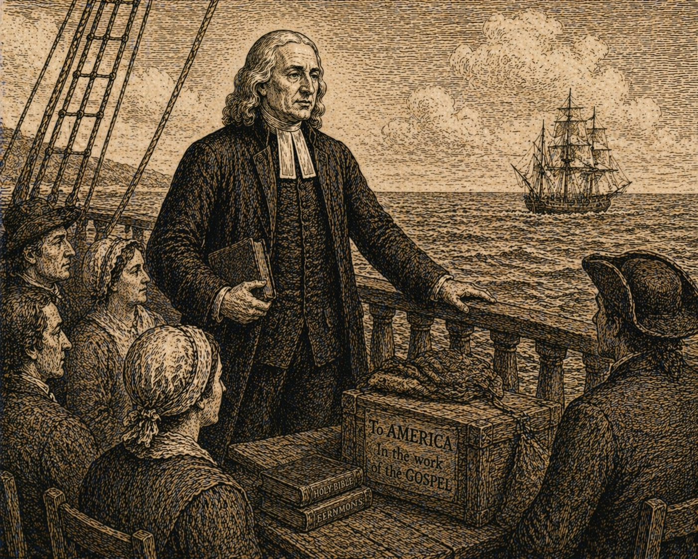

Проповідь 31 - Нагірна Проповідь Господа нашого: Одинадцяте повчання
Переклад проповіді "Upon Our Lord's Sermon On The Mount: Discourse Eleven".
Проповідь 31 - Нагірна Проповідь Господа нашого: Одинадцяте повчання

1-7 листопада 1749
Проповіді Джона Веслі – Проповідь 31
Нагірна Проповідь Господа нашого: Одинадцяте повчання
«Увійдіть тісними воротами: бо просторі ворота і широка дорога, що веде до загибелі, і багато хто йдуть нею. Тому що тісні ворота, і вузька дорога, що веде до життя, і мало хто знаходять її» (Матвія 7:13–14).
-
Наш Господь, застерігши нас про небезпеки, які легко обсідають нас на початку входження в справжню релігію, про перешкоди, що природно постають зсередини, через лукавство наших власних сердець, тепер переходить до пересторог про перешкоди ззовні, зокрема про поганий приклад і погану пораду. Через те або інше тисячі, які колись добре бігли, відступили до погибелі; навіть багато з тих, хто вже не був новачком у релігії, хто зробив певний поступ у праведності. Тому Своє застереження щодо цього Він подає нам з усією можливою ревністю і повторює знову й знову, різними висловами, щоб ми, бува, якось не випустили його з уваги. Отже, щоб надійно вберегти нас від першого, Він каже: «Увійдіть тісними воротами: бо просторі ворота і широка дорога, що веде до загибелі, і багато хто йдуть нею. Тому що тісні ворота, і вузька дорога, що веде до життя, і мало хто знаходять її». А щоб уберегти нас від другого, Він каже: «Стережіться лжепророків». Наразі ми розглянемо лише перше.
-
«Увійдіть тісними воротами: бо просторі ворота і широка дорога, що веде до загибелі, і багато хто йдуть нею. Тому що тісні ворота, і вузька дорога, що веде до життя, і мало хто знаходять її».
-
У цих словах можна зауважити, по перше, нерозривні риси дороги до пекла: «Просторі ворота і широка дорога, що веде до загибелі, і багато хто йдуть нею». По друге, нерозривні риси дороги до неба: «Тісні ворота, і вузька дорога, що веде до життя, і мало хто знаходять її». По третє, серйозне напоумлення, що з цього випливає: «Увійдіть тісними воротами».
I. 1. Ми можемо зауважити, по перше, нероздільні властивості дороги до пекла: «Просторі ворота і широка дорога, що веде до загибелі, і багато хто йдуть нею».
-
Справді, просторі ворота і широка дорога ведуть до погибелі. Бо гріх є воротами пекла, а беззаконня є дорогою до погибелі. І які ж просторі ті ворота гріха, яка ж широка дорога беззаконня. Божа «заповідь» є «вельми широка», бо сягає не лише наших вчинків, але й кожного слова, що виходить з уст, ба навіть кожної думки, що постає в серці. І гріх такий самий широкий, як і заповідь, бо всяке порушення заповіді є гріх. Ба більше, він у тисячу разів ширший, бо шлях зберігати заповідь є лише один. Ми не зберігаємо її належним чином, якщо неправильним є або те, що робиться, або спосіб, у який це робиться, або будь яка інша обставина. А порушити кожну заповідь можна тисячею способів, тож ці ворота справді широкі.
-
Розглянемо це трохи детальніше: якою широкою є дія батьківських гріхів, від яких походять усі інші — тілесного розуму, що є ворожнечею до Бога, гордості серця, свавілля та любові до світу! Чи можемо ми встановити для них якісь межі? Хіба вони не проникають у всі наші думки й не змішуються з усіма нашими почуттями? Хіба вони не є закваскою, що квасить, більшою чи меншою мірою, всю масу наших прихильностей? Хіба ми, при пильному й щирому дослідженні самих себе, не відчуваємо, як ці корені гіркоти постійно проростають, заражаючи всі наші слова і осквернюючи всі наші дії? І яким незліченним є їхнє потомство в кожному поколінні та народі! Їх вистачає, щоб покрити всю землю мороком і жорстоким мешканням.
-
О, хто здатен перелічити їхні прокляті плоди; порахувати всі гріхи, чи то проти Бога, чи проти ближнього, не вигадані уявою, а ті, що є предметом щоденного, сумного досвіду? І нам не потрібно досліджувати всю землю, щоб їх знайти. Погляньмо на будь-яке одне царство, одну окрему країну, місто чи містечко, і який щедрий буде цей «урожай»! І нехай це буде не одне з тих місць, що все ще перебуває в темряві Магомета чи язичництва, але те, що згадує Ім’я Христа, що вважає себе просвітленим Його славною Євангелією. Не йдімо далі, а погляньмо на царство, до якого належимо, на місто, в якому перебуваємо. Ми називаємо себе християнами — так, і навіть найчистішого сорту: ми протестанти, реформовані християни! Але, на жаль, хто ж провадить цю реформу наших переконань у наші серця та життя? Чи не є на це підстава? Бо які незліченні наші гріхи, і то найтяжчі. Хіба найогидніші мерзоти всякого роду не множаться між нами з дня на день? Хіба гріхи всякого виду не покривають землю, як води покривають море? Хто може їх перелічити? Краще підіть і порахуйте краплі дощу або піщинки на морському березі. Ось такі «просторі ворота» і така «широка дорога, що веде до погибелі»!
-
«І багато хто йдуть нею»; багато, хто входять цими воротами, хто ходять цією дорогою, майже стільки ж, скільки входять у ворота смерті, скільки опускаються в гробові оселі. Бо не можна цього заперечити (хоч і визнаємо це з соромом і жалем у серці), що навіть у цій країні, яка називається християнською, більшість людей, усіх вікових груп і статей, усіх професій і занять, усіх рангів і станів, ходять дорогою погибелі. Більшість жителів цього міста і донині живе в гріху, у якійсь явній, звичній, усвідомленій непокорі закону, який вони самі ж і визнають; так, у якійсь зовнішній провині, у грубому, видимому виявленні нечестя або неправедності; у якомусь відкритому порушенні обов’язку перед Богом або перед людьми. Отже, не можна заперечити, що ці всі знаходяться на шляху, який веде до погибелі. Додаймо до них тих, хто має ім’я, що вони живуть, але ніколи ще не ожили для Бога; тих, хто зовні здається добропорядним людям, але всередині повні всякої нечистоти, повні гордості чи марнославства, гніву чи помсти, честолюбства чи жадібності; тих, хто любить себе, любить світ, любить насолоди більше, ніж любить Бога. Ці, справді, можуть бути високо поціновані серед людей; але для Господа вони є огидні. І як багато з них, цих «святих світу», примножують число «дітей пекла»! Так, додаймо до них усіх, хто би вони не були в інших аспектах — тих, що, «не знаючи праведності Божої і намагаючись встановити власну», як підставу примирення з Богом і прийняття Ним, тим самим не «підкорилися праведності Божій» через віру. Тепер, об’єднаймо все це разом, і як страшенно правдивим є твердження нашого Господа: «Просторі ворота і широка дорога, що веде до погибелі, і багато хто йдуть нею»!
-
І це стосується не лише простого натовпу, бідної, низької, нерозумної частини людства. Це стосується і людей визначних у світі, людей, що мають багато полів і пар волів, і вони не прагнуть бути виправданими від цього. Навпаки, «багато мудрих за тілом», за людськими способами судження, «багато сильних», у владі, у відвазі, у багатстві, багато «шляхетних покликані», покликані на широку дорогу світом, тілом і дияволом, і вони не противляться цьому покликанню. Ба більше, чим вище вони піднесені в достатку й силі, тим глибше занурюються в беззаконня. Чим більше благословень вони прийняли від Бога, тим більше гріхів чинять, використовуючи свою честь або багатство, своє знання або мудрість не як засоби звершувати своє спасіння, але радше як засоби перевершувати в пороці і так забезпечувати власну погибель.
II. 1. І саме з тієї причини багато з них так безпечно йдуть широкою дорогою, тому що вона широка; не розуміючи, що це нероздільна властивість дороги до погибелі. «Багато хто, — каже Господь, — йдуть нею», саме через те, через що вони мали б утекти від неї, бо «тісні ворота, і вузька дорога, що веде до життя, і мало хто знаходять її».
-
Це є невід’ємна властивість дороги до неба. Такою вузькою є дорога, що веде до життя, до вічного життя; такими тісними є ворота, що ніщо нечисте, ніщо несвяте не може ввійти. Жоден грішник не може пройти цими воротами, доки не буде спасенний від усіх своїх гріхів. Не лише від зовнішніх гріхів, від злого «життя», успадкованого, за переданням, від батьків. Не достатньо того, що він «перестав чинити зло» і «навчився чинити добро». Він має бути спасенний не лише від усіх гріховних учинків і від усякої злої та марної мови, але й внутрішньо перемінений, цілковито оновлений духом свого розуму. Інакше він не зможе пройти воротами життя, він не зможе ввійти в славу.
-
Бо «вузька дорога, що веде до життя» — це дорога всезагальної святості. Вузькою справді є дорога убогості духу; дорога святого плачу; дорога лагідності; і та, де відчувається голод і спрага за правдою. Вузькою є дорога милосердя; щирої любові; дорога чистоти серця; добра до всіх людей; і дорога радісного терпіння у злі, у всякому злі, заради праведності.
-
«І мало хто знаходить її». О, як мало хто знаходить навіть дорогу язичницької чесності! Як мало тих, хто не чинить іншому того, чого не бажав би собі! Як мало є таких, що перед Богом чисті — не чинять ані несправедливості, ані жорстокості! Як мало тих, хто не «грішить язиком своїм»; хто не говорить нічого недоброго, нічого неправдивого! Яка мізерна частина людства є невинною навіть у зовнішніх проступках! А яка ще менша частка має серце праведне перед Богом — чисте й святе в Його очах! Де вони, кого Його всепроникне око бачить справді смиренними, такими, що гидують собою в поросі й попелі перед Богом, своїм Спасителем; глибоко й незмінно серйозними, такими, що відчувають свої потреби і «проводять час свого мандрівництва в страху»; справді лагідними й тихими, ніколи «не переможеними злом, але переможцями зла добром»; такими, що цілковито прагнуть Бога і безперестанку жадають оновлення в Його подобі.Як рідко розсіяні по землі ті, чиї душі розширені любов’ю до всього людства, і хто любить Бога всією своєю силою; хто віддав Йому своє серце і не бажає нічого іншого ні на землі, ні на небі. Як мало тих любителів Бога й людей, які витрачають усю свою силу, чинячи добро всім людям, і готові терпіти все, так, навіть саму смерть, щоб урятувати одну душу від вічної смерті.
-
Але коли так мало знаходять на дорозі життя і так багато є на дорозі погибелі, виникає велика небезпека, щоб потік чужого прикладу не поніс і нас разом із ними. Навіть один приклад, якщо він постійно перед нашими очима, здатний справити на нас сильне враження, особливо тоді, коли він на боці нашої природи, коли узгоджується з нашими власними нахилами. То якою ж великою має бути сила таких численних прикладів, що безупинно стоять перед нами, і всі разом змовляються, разом із нашими власними серцями, тягнути нас униз за течією природи. Як тяжко має бути зупинити цей приплив і зберегти себе «незаплямованими у світі».
-
Ще більше ускладнює справу те, що приклад подають нам не грубі й безтямні люди, принаймні не лише вони, які тиснуться на шлях униз; приклад подають і вишукані, добре виховані, шляхетні, мудрі люди: ті, що знають світ, люди знання, глибокої й різноманітної науки, розсудливі, красномовні. Усі вони, або майже всі, виступають проти нас. І як нам устояти супроти них? Хіба їхні слова не мов мед? Хіба вони не опанували всі мистецтва лагідного переконування, а також міркування, бо вони вправні в усяких суперечках і словесних змаганнях. Для них, отже, дрібниця довести, що дорога правильна саме тому, що вона широка; що той, хто йде за більшістю, не може чинити зла, а винен лише той, хто не хоче йти за нею. Вони скажуть, що ваша дорога мусить бути неправильною, бо вона вузька, і бо так мало хто знаходить її. Вони доводитимуть це як очевидне: що зло є добром, а добро є злом; що дорога святості є дорогою погибелі, а дорога світу є єдиною дорогою до неба.
-
О, як можуть невчені й неосвічені люди відстоювати свою справу проти таких супротивників? І все ж це не всі, з ким їм доводиться боротися, хоч завдання і так нерівне. Бо на дорозі, що веде до погибелі, є багато сильних, шляхетних і могутніх людей, так само як і мудрих; і ці мають коротший спосіб спростування, ніж розум і доводи. Вони зазвичай звертаються не до розуміння, а до страху тих, хто їм противиться. Це шлях, який рідко не має успіху, навіть там, де доводи не допомагають, бо він доступний для спроможностей усіх людей. Адже всі вміють боятися, незалежно від того, чи вміють міркувати, чи ні. І всі, хто не має твердого уповання на Бога, певної надії на Його силу і на Його любов, не можуть не боятися прогнівити тих, у чиїх руках є влада цього світу. Тож чи дивно, що приклад таких людей стає законом для всіх, хто не знає Бога?
-
Багато заможних також йдуть широким шляхом. І ці апелюють до надій людей, до всіх їхніх нерозумних бажань, так само сильно й ефективно, як могутні та знатні впливають на страхи. Отже, майже неможливо втриматись у дорозі до Царства, якщо ти не вмер для всього земного, якщо ти не розіп’ятий для світу, а світ — для тебе, якщо ти не прагнеш нічого, крім Бога.
-
Бо яким темним, яким невтішним, яким відразливим видається протилежний бік. Тісні ворота, вузька дорога, і мало хто знаходить ті ворота, мало хто ходить тією дорогою. До того ж і ці небагато, здебільшого, не є людьми мудрими, не є людьми науки чи красномовства. Вони не здатні міркувати ні сильно, ні ясно. Вони не вміють подати жодного доводу так, щоб він приніс користь. Вони не знають, як обґрунтувати те, у що, за їхніми словами, вірять, або як пояснити навіть те, що, як вони твердять, переживають. Справді, такі оборонці не рекомендуватимуть, а радше скомпрометують справу, яку взялися захищати.
-
Додайте до цього, що вони не є шляхетними, не є почесними людьми. Якби вони були такими, ви, можливо, змирилися б із їхньою нерозсудливістю. Натомість це люди без впливу, без влади, без ваги у світі. Вони убогі й зневажені, низького стану, і такі, що не мають сили, навіть якби мали волю, завдати вам шкоди. Тому від них, по суті, нема чого боятися, і від них нема чого сподіватися. Бо більшість із них може сказати: «Срібла й золота я не маю», принаймні має дуже малу частку. Ба більше, деякі з них ледве мають що їсти або що вдягнути. З цієї причини, а також тому, що їхні дороги не такі, як дороги інших людей, про них усюди говорять проти них, ними погорджують, їхні імена відкидають як лихі; їх по різному переслідують і поводяться з ними як із брудом і покидьками світу. Тож і ваші страхи, і ваші надії, і всі ваші бажання, окрім тих, які ви маєте безпосередньо від Бога, так, усі ваші природні пристрасті безупинно схиляють вас повернутися на широку дорогу.
III. 1. Тому наш Господь так ревно закликає: «Увійдіть тісними воротами». Або, як те саме напоумлення висловлено в іншому місці: «Силкуйтеся ввійти», agvnizesqe eiselqein, тобто «змагайтеся, немов у смертельній боротьбі», «багато-хто будуть намагатися ввійти», змагатися без старання, «та не зможуть».
-
Це правда, Він натякає на те, що може здаватися іншою причиною, чому вони не зможуть увійти, у словах, які відразу йдуть за цим. Бо після того, як Він сказав: «Бо кажу вам, багато-хто будуть намагатися ввійти, та не зможуть», Він додає: «Як устане Господар та двері замкне, ви зачнете вистоювати ізнадвору», arxhsqe exv estanai, радше: ви стоїте надворі (бо arxhsqe, здається, є лише витонченим вставним словом), «та стукати в двері й казати: Господи, відчини нам! А Він вам у відповідь скаже: Не знаю Я вас, звідки ви! Відійдіть від Мене всі, хто чинить неправду!» (Луки 13:24–25, 27).
-
Може здатись на перший погляд, що причиною їхньої неспроможності було запізнення з початком пошуку, а не сам спосіб пошуку. Але врешті-решт це одне й те саме. Їм було наказано відійти тому, що вони були «працівниками беззаконня»; бо вони ходили широкою дорогою; іншими словами, бо не змагались увійти в тісні ворота. Ймовірно, вони шукали ще до того, як двері зачинились; але цього було недостатньо: а коли почали змагатись, було вже пізно.
-
Тому змагайтеся тепер, у цей ваш день, «увійти тісними воротами». А щоб досягти цього, утвердіть у серці, і тримайте це завжди найпершим у думках: якщо ви на широкій дорозі, ви на дорозі, що веде до погибелі. Якщо багато йдуть із вами, то так само певно, як Бог є істинний, і вони, і ви йдете до пекла. Якщо ви ходите так, як ходить більшість людей, ви йдете до безодні. Чи йдуть із вами тією самою дорогою багато мудрих, багато багатих, багато сильних або шляхетних? Уже за самим цим знаком, навіть не йдучи далі, ви знаєте, що вона не веде до життя. Ось перед вами коротке, просте, незаперечне правило, ще до того, як ви вдастеся до подробиць. У якій би справі ви не були зайняті, ви маєте бути «не як усі», інакше загинете. Дорога до пекла не має в собі нічого «не як у всіх», а дорога до неба є «не як у всіх» у всьому. Якщо ви робите бодай один крок у бік Бога, ви вже не такі, як інші люди. Але не зважайте на це. Набагато краще стояти самому, ніж упасти в яму. Тож біжіть із терпінням у змаганні, що покладене перед вами, хоч супутників у ньому і мало. Вони не завжди будуть такими. Ще трохи, і ви «прийдете до незліченної громади ангелів, до урочистого зібрання і Церкви первістків, і до духів праведників, що досягли досконалості».
-
Отже, тепер «змагайтеся ввійти тісними воротами», пройнявшись найглибшим відчуттям тієї невимовної небезпеки, в якій перебуває ваша душа доти, доки ви на широкій дорозі, доти, доки ви позбавлені вбогості духа і всієї тієї внутрішньої релігії, яку багато хто, багаті та мудрі, вважають безумством. «Змагайтеся ввійти», пронизані скорботою й соромом за те, що так довго бігли разом із нерозважливим натовпом, цілковито занедбуючи, якщо не зневажаючи, ту «святість, без якої ніхто не побачить Господа». Змагайтеся, немов у смертельній боротьбі святого страху, щоб, коли вам дана обітниця ввійти в Його спокій, у той «спокій, що лишається для Божого народу», ви все ж «не позбавилися його». Змагайтеся з усією гарячістю бажання, «зі стогнаннями, яких не можна висловити». Змагайтеся молитвою безупинною, завжди, в усіх місцях, підносячи серце до Бога і не даючи Йому спочинку, доки ви «прокинетеся за Його подобою» і «насититеся нею».
-
І на завершення: «Змагайтеся увійти в тісні ворота», не лише цією боротьбою душі — каяттям, жалем, соромом, бажанням, страхом, безперервною молитвою; але також упорядкуванням усього свого життя: ходи всією своєю силою всіма дорогами Божими, дорогою невинності, побожності й милосердя. Утримуйтеся від усякого роду зла; чиніть усе можливе добро всім людям; відречіться від себе, своєї волі в усьому, і щоденно беріть свій хрест. Будьте готові відтяти свою правицю, вирвати своє праве око й відкинути його; бути готовим втратити маєток, друзів, здоров’я — усе земне, аби тільки увійти в Царство Небесне!